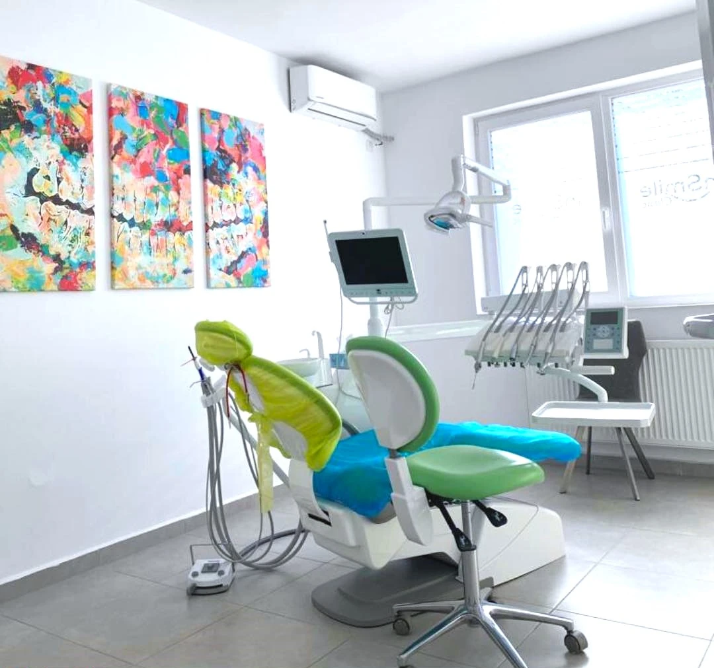
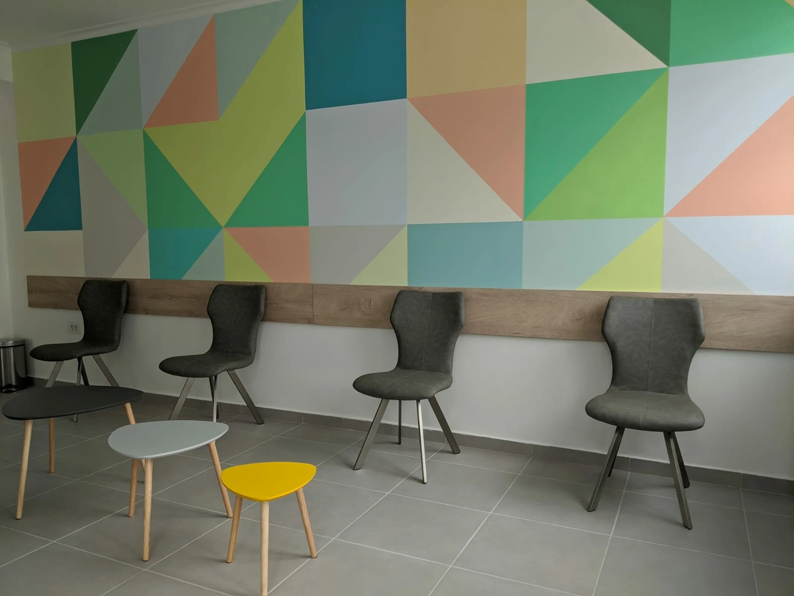
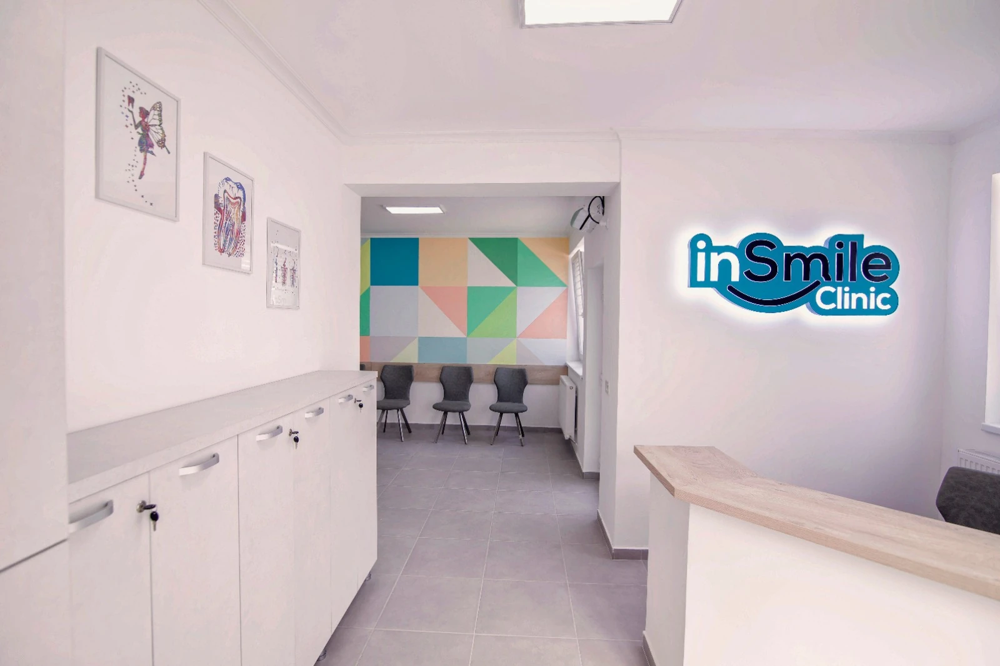
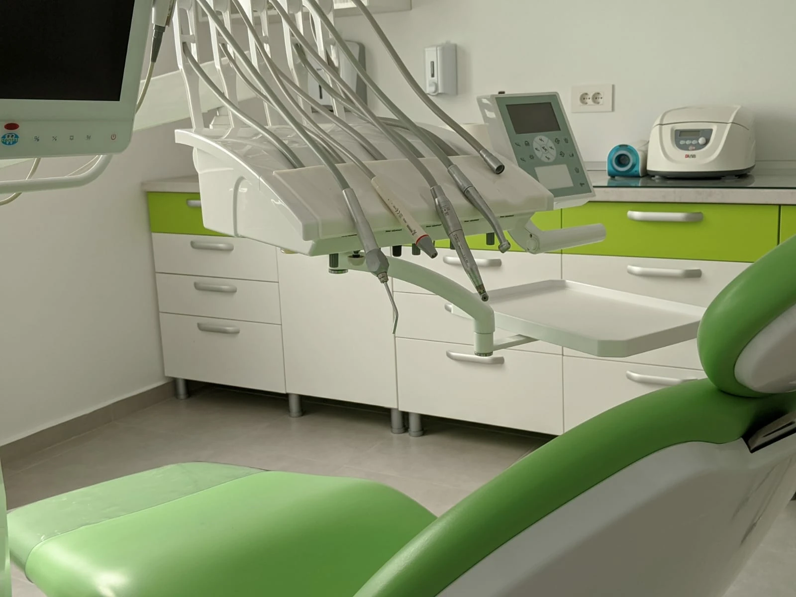
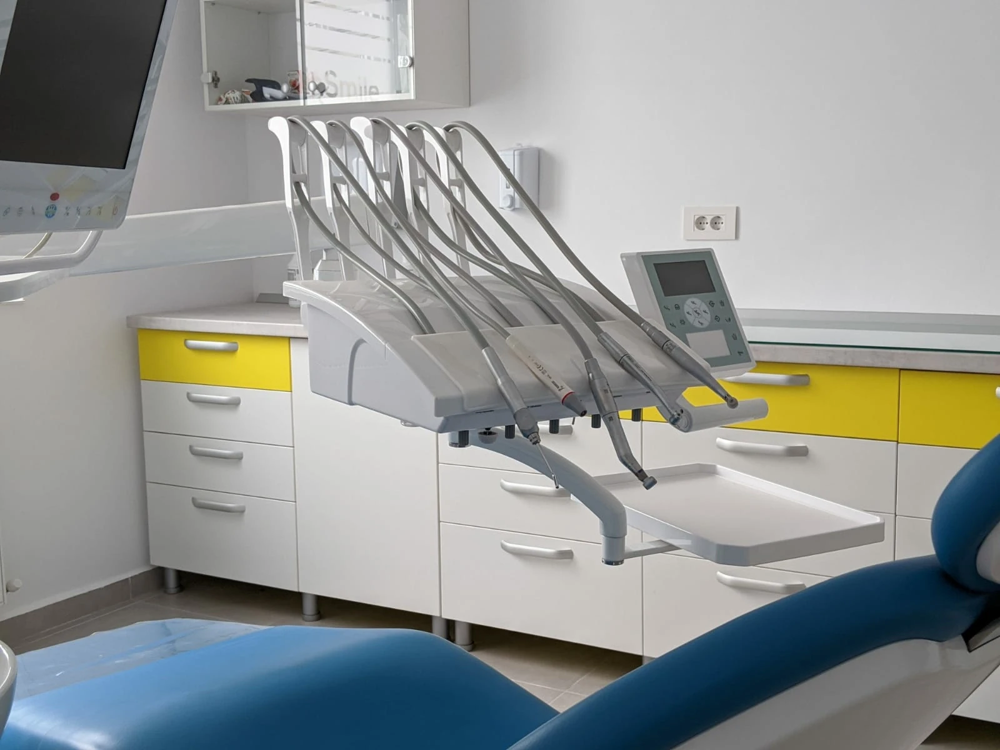
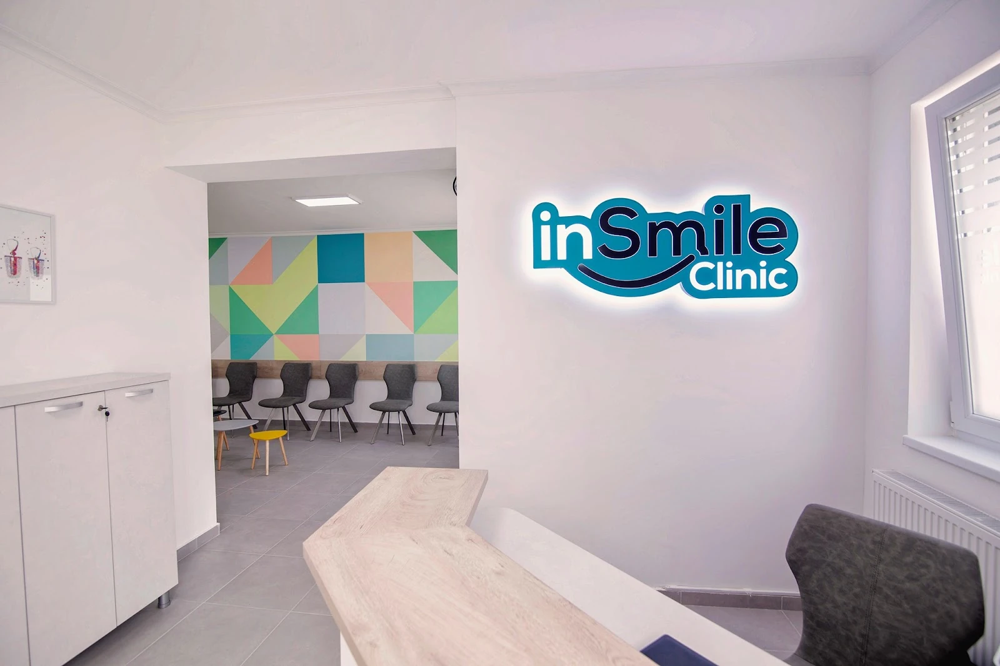
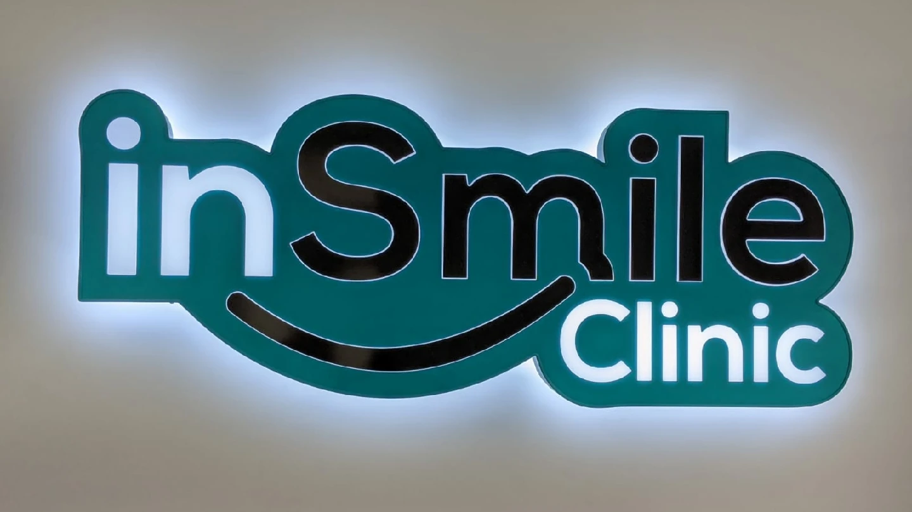
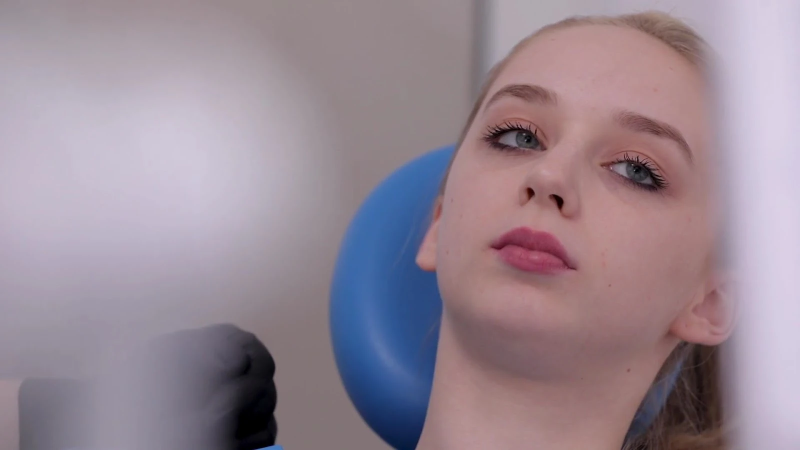

{{pag. 1|p. 1|pág. 1}} {{Cabinet de stomatologie · Strada Cazărmilor 19, Iași|Dental clinic · Strada Cazărmilor 19, Iași|Consultório dentário · Strada Cazărmilor 19, Iași}}
{{Zâmbetul tău,|Your smile,|O seu sorriso,}}{{pagină cu pagină.|page by page.|página a página.}}
{{Spui motivul vizitei și ziua care ți se potrivește. Noi le notăm în jurnal și te sunăm să confirmăm ora.|You tell us the reason for your visit and the day that suits you. We note them in the diary and call you to confirm the time.|Diz-nos o motivo da visita e o dia que lhe convém. Nós anotamos no diário e ligamos para confirmar a hora.}}

{{pag. 2|p. 2|pág. 2}} {{Motivele vizitei|Reasons to visit|Motivos da visita}}
{{Ce poți nota în fișă|What you can write on the card|O que pode anotar na ficha}}
{{Șase motive pentru care oamenii trec pragul unui cabinet. Lista exactă a serviciilor: de confirmat|Six reasons people walk into a dental practice. Exact list of services: to be confirmed|Seis motivos pelos quais as pessoas entram num consultório. Lista exata de serviços: a confirmar}}
{{pag. 3|p. 3|pág. 3}} {{Cabinetul|The clinic|O consultório}}
{{Pereți în triunghiuri colorate, scaune în verde și albastru|Walls in coloured triangles, chairs in green and blue|Paredes em triângulos coloridos, cadeiras em verde e azul}}







{{pag. 4|p. 4|pág. 4}} {{Programare|Booking|Marcação}}
{{Scrie-ți singur pagina|Write your own page|Escreva a sua página}}
{{Alege motivul, zona (dacă vrei) și ziua. Mesajul se scrie singur și pleacă pe WhatsApp sau SMS; cabinetul te sună să confirme ora.|Choose the reason, the area (if you like) and the day. The message writes itself and goes out on WhatsApp or SMS; the clinic calls you to confirm the time.|Escolha o motivo, a zona (se quiser) e o dia. A mensagem escreve-se sozinha e sai por WhatsApp ou SMS; o consultório liga para confirmar a hora.}}
{{pag. 5|p. 5|pág. 5}} {{Cum ne găsești|How to find us|Como nos encontrar}}
{{Strada Cazărmilor nr. 19|Strada Cazărmilor no. 19|Strada Cazărmilor n.º 19}}
- Strada Cazărmilor 19707410 Iași, România
- {{Luni 10:00–18:00|Monday 10:00–18:00|Segunda 10:00–18:00}}{{restul zilelor: de confirmat|other days: to be confirmed|restantes dias: a confirmar}}
- 0745 131 600{{telefon, WhatsApp sau SMS|phone, WhatsApp or SMS|telefone, WhatsApp ou SMS}}
- insmile.ro